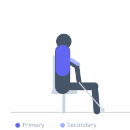

Exercise guide / Towel-Grip Cable Seated Row
Towel-Grip Cable Seated Row
The towel-grip cable seated row loops a gym towel through the cable attachment and grips both ends, dramatically increasing grip and forearm activation compared to standard handles. The towel's unstable, compressible surface requires constant grip force throughout each rep, adding a significant forearm training stimulus to the standard lat and upper back benefits of the seated cable row.
Primary muscles
latissimus dorsi
rhomboid major
Secondary muscles
biceps brachii
trapezius middle
Stabilizers
erector spinae
Equipment
Cable Machine (High Pulley)


Starting position
- Loop a gym towel through the cable carabiner. Sit at the cable row station, feet on the footplate. Grip both ends of the towel. Lean back slightly, arms extended.
Setup
- Use a hand towel or wrist-sized rope for the grip. Ensure the towel is threaded securely through the attachment. Set weight lower than a standard handle row — the grip will fatigue earlier.
Steps
- Step 1: Sit tall and grip both towel ends firmly.
- Step 2: Depress and retract the shoulder blades to initiate.
- Step 3: Row the towel ends toward the lower abdomen.
- Step 4: At peak contraction, squeeze the grip and the lats.
- Step 5: Return under control to full arm extension.
Coaching cues
- Squeeze the towel like your life depends on it
- Back does the rowing; hands are just hooks
- Full stretch at the bottom of every rep
Breathing
- Exhale on the row. Inhale returning.
Range of motion
- Full arm extension to elbows behind torso.
Tempo
- 2-1-2-0
Common mistakes
- Grip loosening mid-set — squeeze the towel continuously
- Not using the towel's instability as a training stimulus — it should feel different from a standard handle
Safety
- Inspect the towel for fraying — a torn towel snapping under load can cause injury
- Use a durable gym towel, not a thin household towel
Training
- strength: 8–12 reps
- strength: 3–4 sets
- Rest: {'strength': 90}